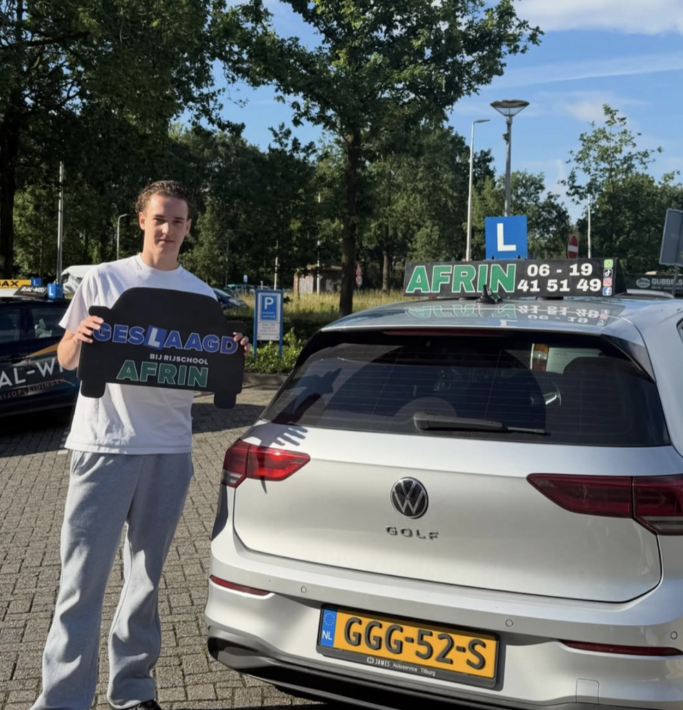
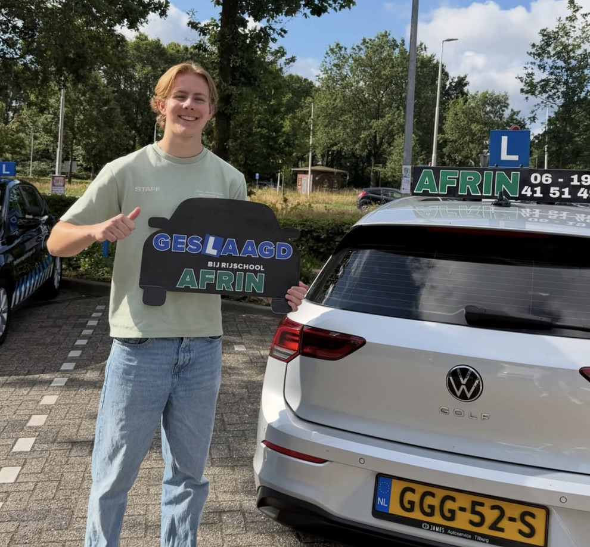
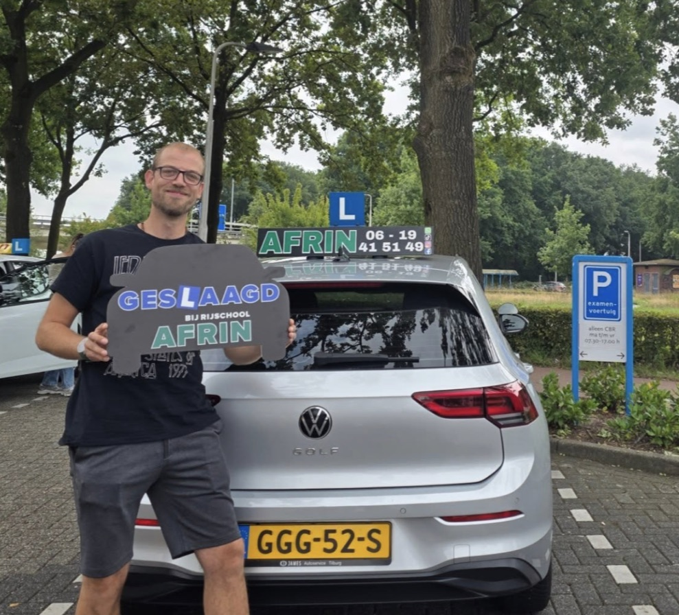
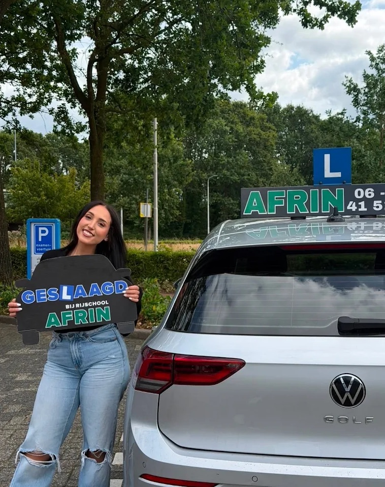
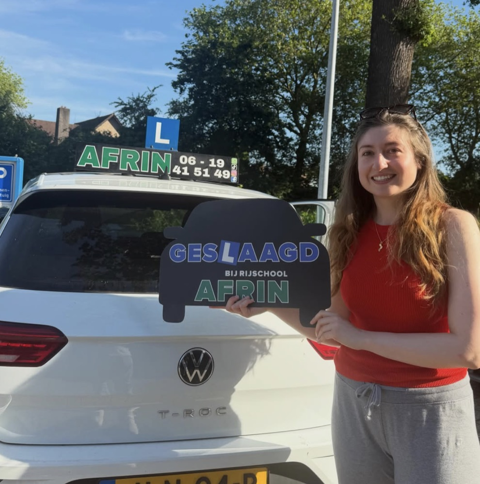
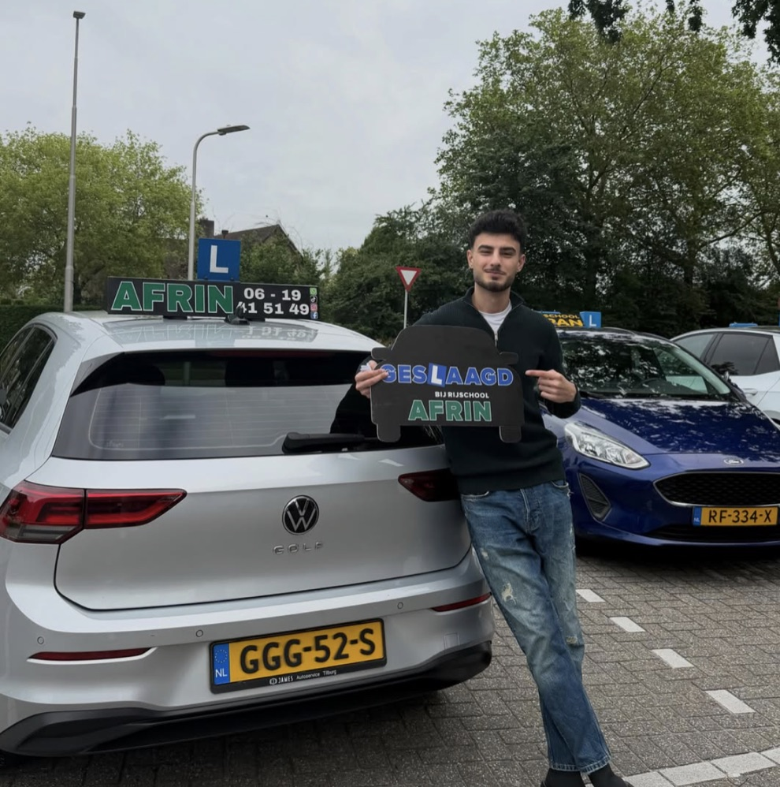
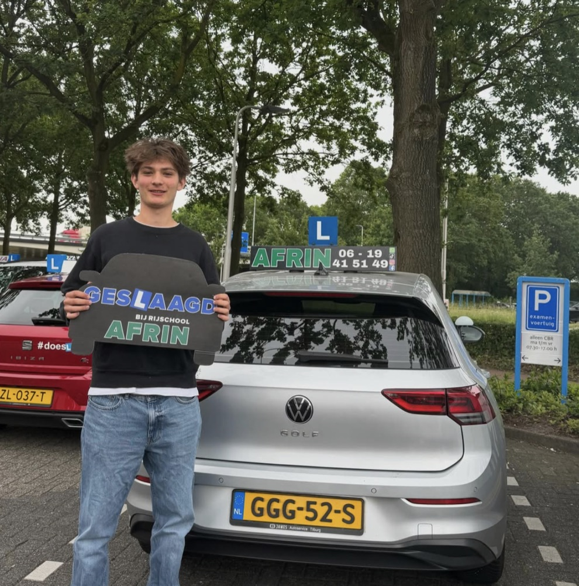
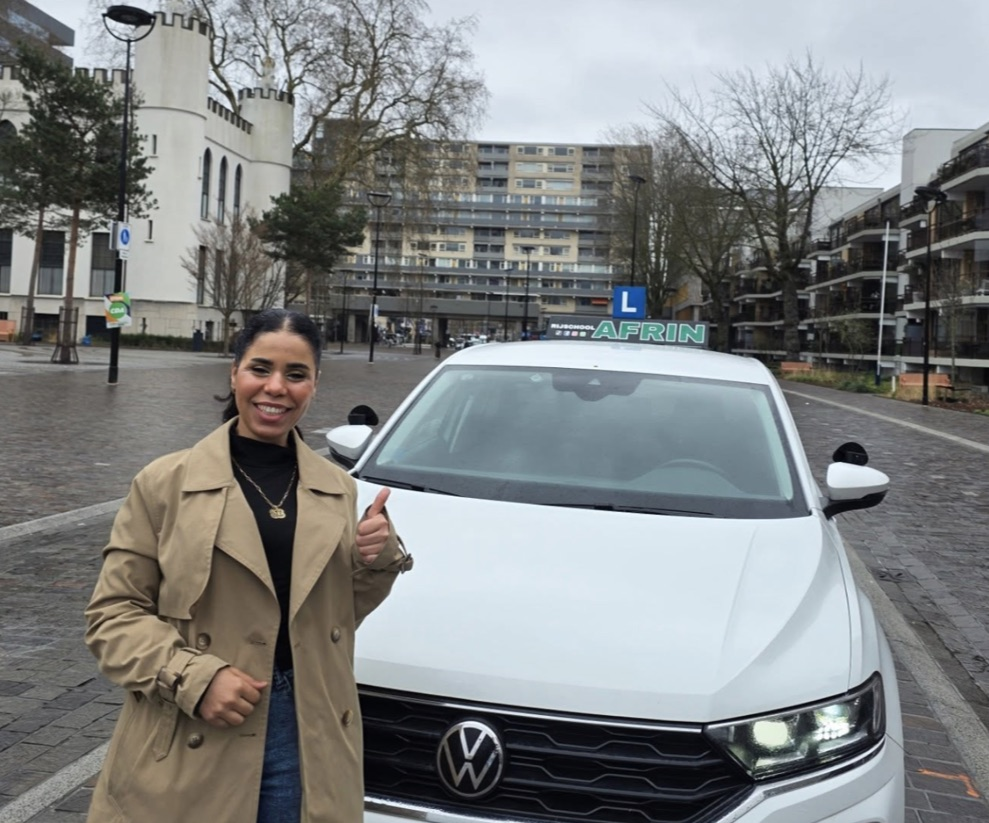

Geslaagd bij Afrin
Hetzelfde bord, dezelfde Golf, alle seizoenen
Veertien geslaagden op dezelfde parkeerplaats bij het CBR in Tilburg. Alleen de mensen en het jaargetijde wisselen.
 Lente
Lente
Zomer Zomer
Zomer
Zomer Zomer
Zomer
Zomer
Zomer
Zomer Herfst
Herfst
Herfst
Herfst Winter
Winter Winter
Winter
WinterIn hun eigen woorden
Wat ze schreven na afloop
★★★★★
GESLAAGD IN ÉÉN KEER dankzij Rijschool Afrin! Hydar, enorm bedankt voor de gezellige lessen, de goede feedback en het vertrouwen dat je mij tijdens iedere les gaf.Lazkin Ramadan
★★★★★
Binnen twee maanden mijn rijbewijs gehaald dankzij de duidelijke uitleg en professionele begeleiding.Mustafa Kutukcu
★★★★★
In één keer geslaagd! Door de rustige uitleg voelde ik mij altijd op mijn gemak in de auto.Alex Balazs
★★★★★
De beste rijschool! Binnen drie maanden mijn rijbewijs gehaald. Alles werd duidelijk uitgelegd.Diyar Korsedo
★★★★★
Ik wil je bedanken voor al het geduld tijdens mijn rijlessen. Je maakt het leren autorijden leuk en overzichtelijk.Omran Hamo
★★★★★
De beste rijschool van Tilburg! Professionele begeleiding, duidelijke uitleg en veel persoonlijke aandacht.Samar Mastoa
Jij bent de volgende met dat bord.
Welk seizoen het wordt, hangt van jou af. Plan een proefles en zet de eerste meter richting jouw foto.